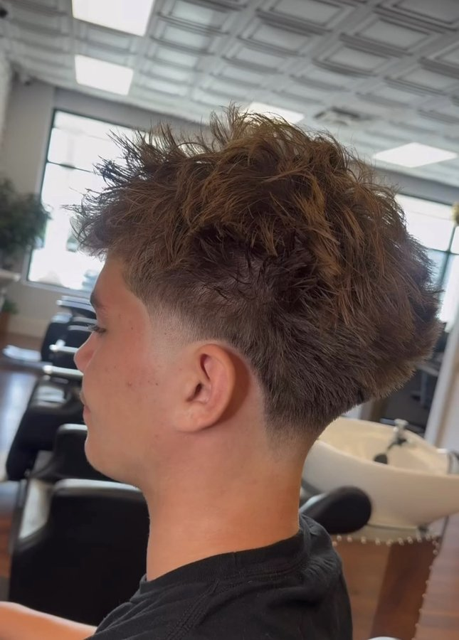
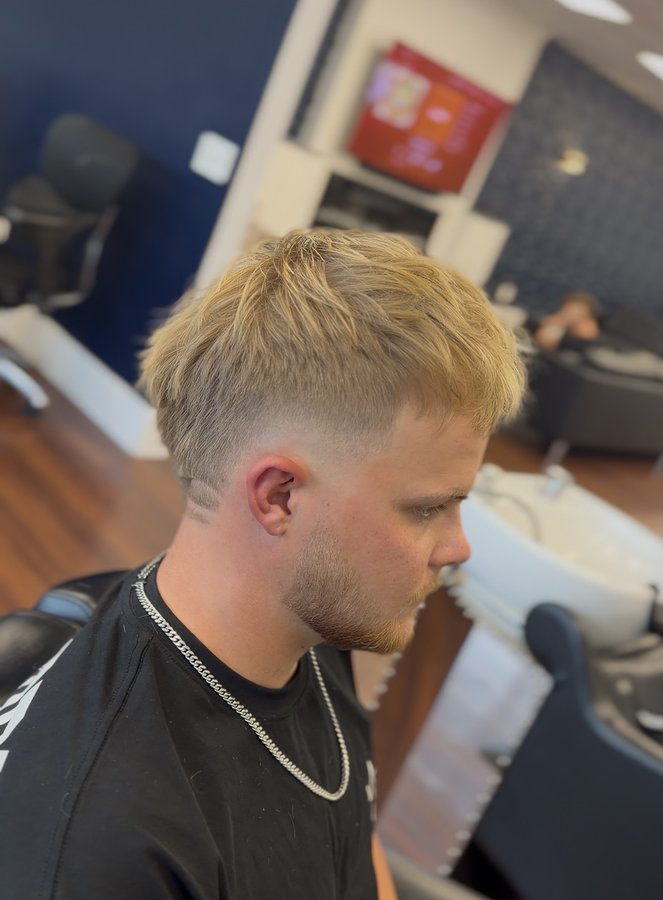
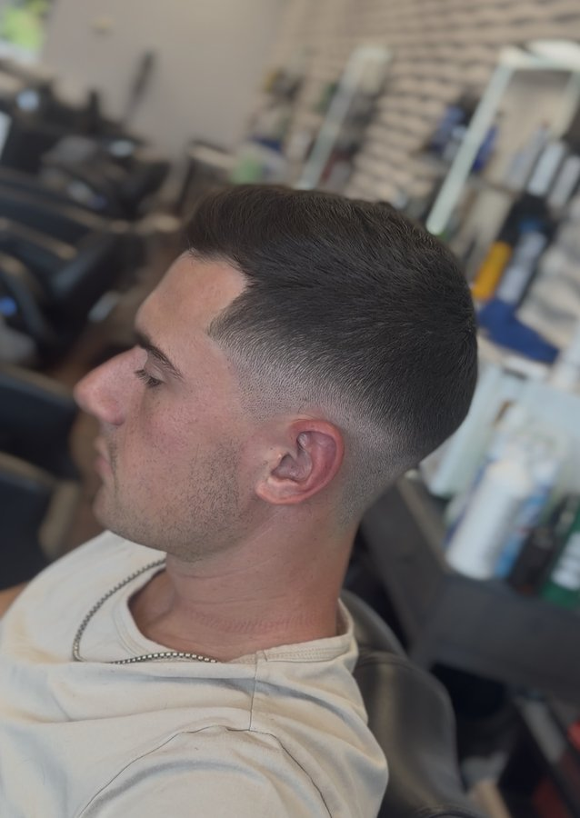
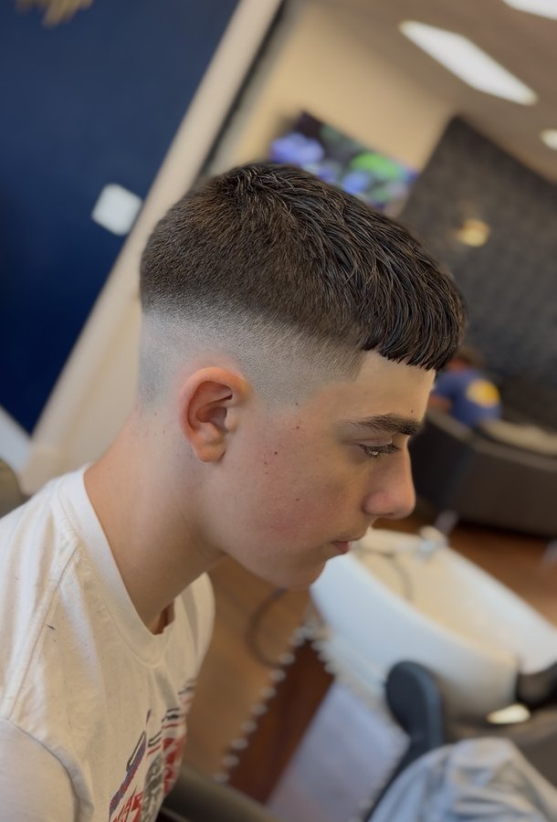
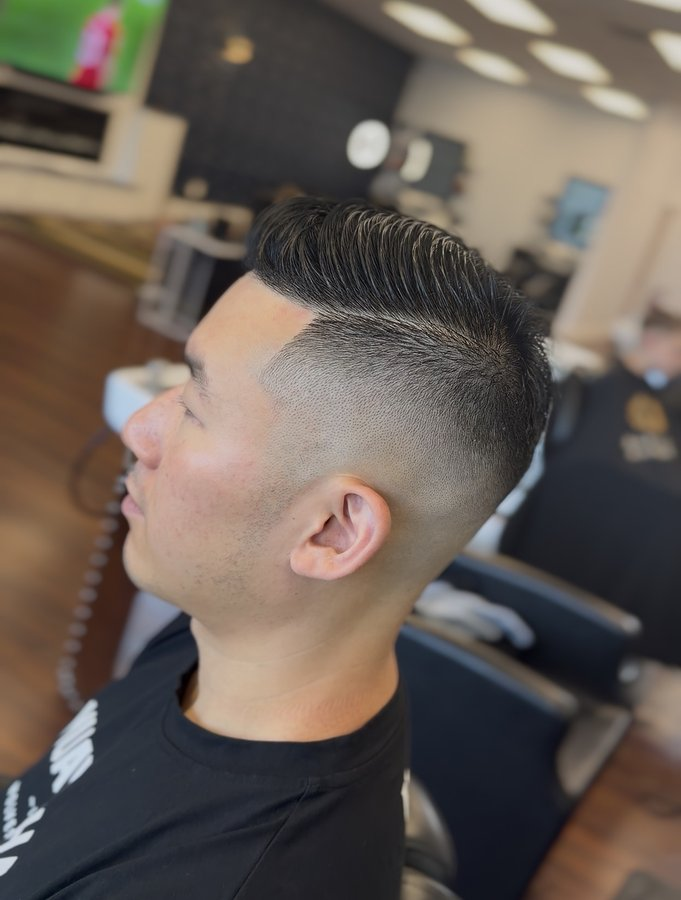

Most popularLow Taper Fade
Tapered only at the sideburns and neckline, leaving the rest of the sides full. Clean edges with a natural, grown-in look.
Good for: textured and messy tops, curls, a low-maintenance clean-up
Home / Skin Fades
Low taper fades, burst fades and low, mid and high skin fades, blended clean with no lines and no shadows. Every fade is finished with a wash, blow-dry and style.
Pick your fade
A taper keeps a little length at the bottom; a skin fade blends all the way down to bare skin. With skin fades, the only difference is where the fade starts. Not sure which one suits you? Your barber will walk you through it before the clippers come out.

Most popularTapered only at the sideburns and neckline, leaving the rest of the sides full. Clean edges with a natural, grown-in look.
Good for: textured and messy tops, curls, a low-maintenance clean-up

CurvedFades in a half-circle around the ear and leaves length at the back of the neck, so the shape “bursts” out from behind the ear.
Good for: mohawks, mullets, curly and textured tops

SubtleStarts just above the ear and around the neckline. Keeps more weight on the sides, so it stays clean but low-key.
Good for: work, longer styles on top, first-time fades

BalancedStarts around the temple. The balance between subtle and bold, and it works with almost any cut on top.
Good for: textured crops, French crops, everyday wear

BoldStarts near the top of the head for maximum contrast. Sharp, clean and made to stand out.
Good for: slick backs, short tops, a fresh statement
Pricing
Low taper, burst, or low, mid & high skin. Includes wash, blow-dry & style
No fade and no skin showing. Sides cut with clippers or scissors, finished with a wash & style
Patient barbers, same clean finish
No fade and no skin showing. Clean, simple and finished with a wash & style
Hot towel and razor outline
Why Babylon
Zero to skin with no visible lines, checked from every angle under good light before you leave the chair.
Every skin fade includes a wash, blow-dry and style, so you walk out ready, not just cut.
Appointments mean your barber has the time to do it right. Book online in under a minute.
Questions
It's where the fade starts. A low skin fade starts just above the ear and stays subtle, a mid skin fade starts around the temple, and a high skin fade starts near the top of the head for the sharpest contrast.
A low taper fade only shortens the hair at the sideburns and neckline and keeps some length there. A low skin fade starts in the same spot but blends all the way down to bare skin, so it looks sharper.
A burst fade curves in a half-circle around the ear instead of going straight around the head. The back of the neck keeps its length, which is why it pairs well with mohawks, mullets and curly tops.
A skin fade or taper fade is $55 and includes a wash, blow-dry and style. Kids fades are $35 to $45.
Most clients come back every 2 to 3 weeks to keep the fade crisp.
Yes. Our barbers do kids skin fades every day and are patient with clients of all ages.
Come visit
Babylon Barbers is on East Evesham Road in Cherry Hill, minutes from Marlton, Voorhees, Haddonfield and Mount Laurel.
More services